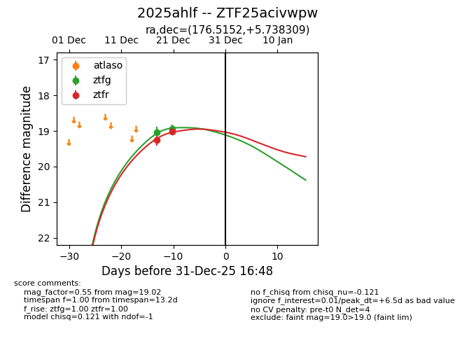
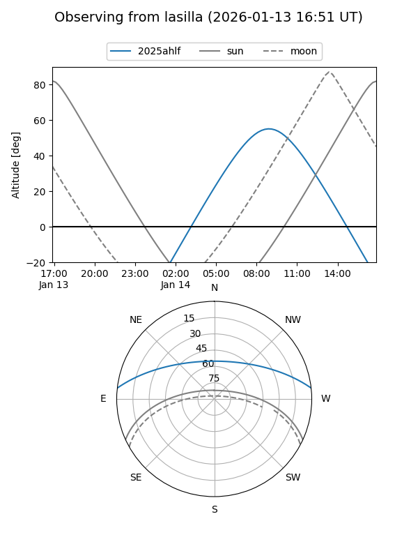
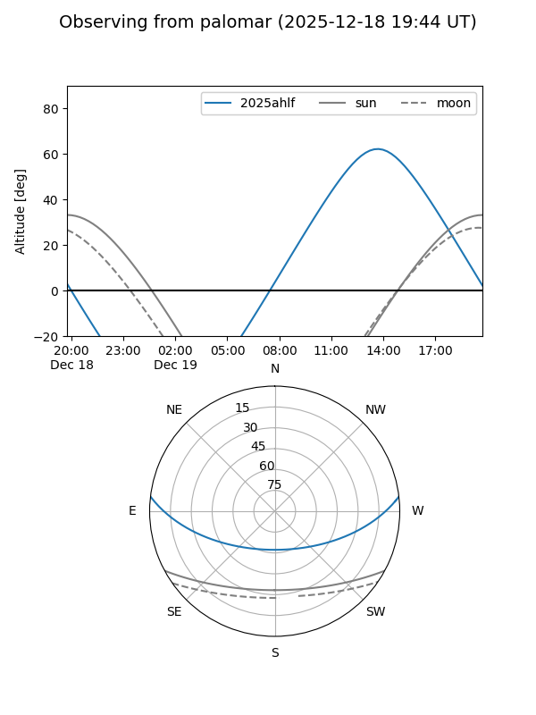
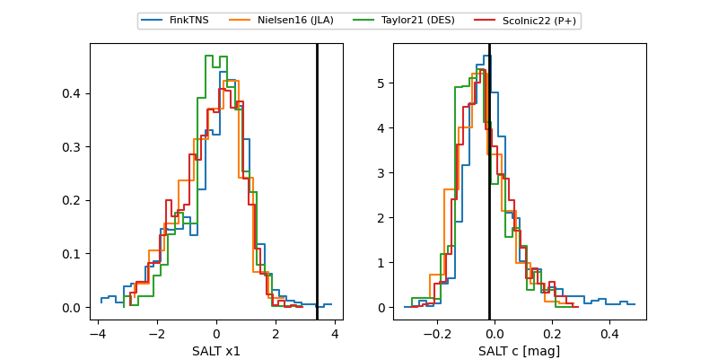

2025ahlf
Target 2025ahlf at 2025-12-31 18:00
Aliases and brokers:
FINK: link
Lasair: link
ALeRCE: link
TNS: link
YSE: link
alt names
ZTF25acivwpw (ztf,fink_ztf)
2025ahlf (tns,yse)
Coordinates:
equatorial (ra, dec) = 176.5152,+5.73831
equatorial (HMS+DMS) = 11:46:03.66,+05:44:17.91
galactic (l, b) = (263.9813,+63.55138)
Flags:
Photometry:
last ztfg=18.93, ztfr=19.02
2 ztfg, 2 ztfr detections
Lightcurve

Visibility


Additional plots
